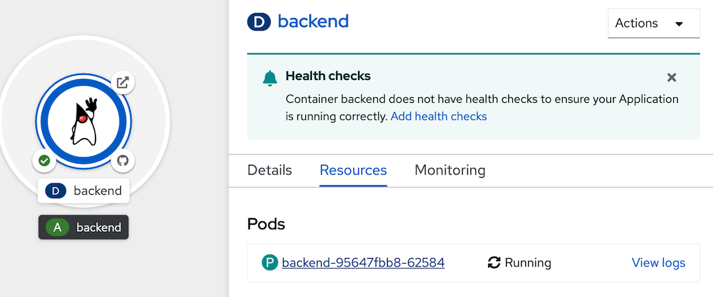
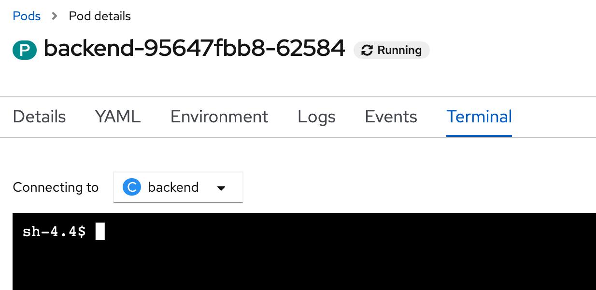
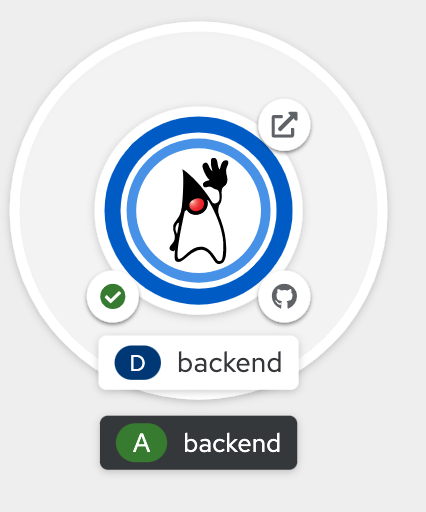
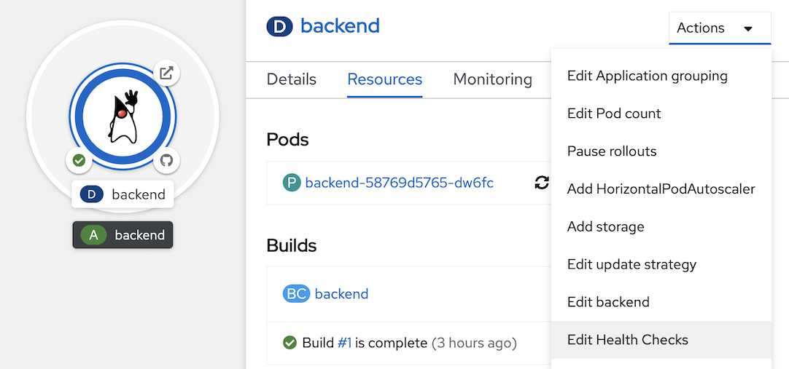
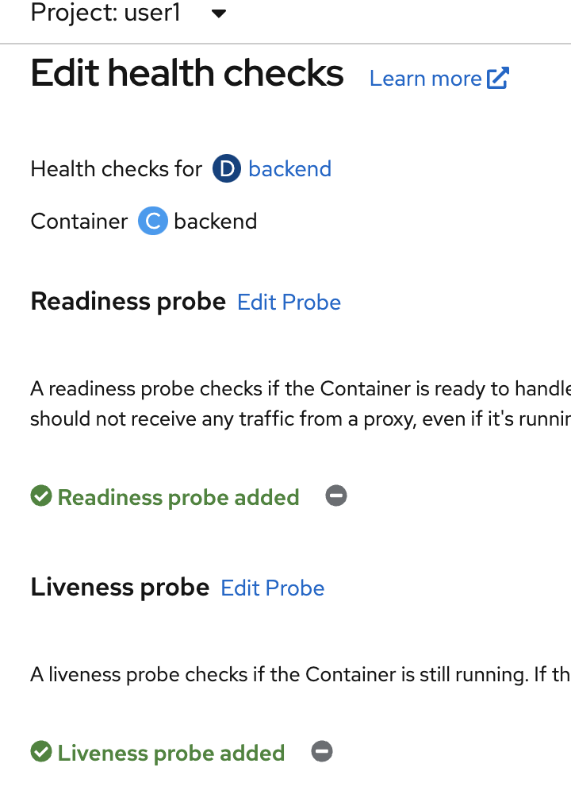
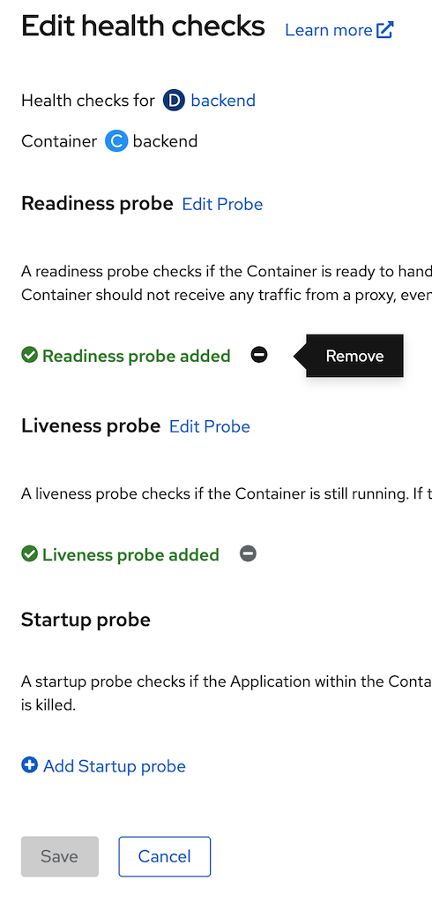

Application Health check
Prerequisite
- Complete Deploy application to openshift with s2i
- Go to your project (same as your username)
- Open Web Terminal by click '>_' on top of OpenShift Web Console
- use web terminal to run command line
Application Probe
A probe is a Kubernetes action that periodically performs diagnostics on a running container. Currently, two types of probes exist, each serving a different purpose.
Readiness Probe A Readiness check determines if the container in which it is scheduled is ready to service requests. If the readiness probe fails a container, the endpoints controller ensures the container has its IP address removed from the endpoints of all services. A readiness probe can be used to signal to the endpoints controller that even though a container is running, it should not receive any traffic from a proxy.
For example, a Readiness check can control which Pods are used. When a Pod is not ready, it is removed.
Liveness Probe A Liveness checks determines if the container in which it is scheduled is still running. If the liveness probe fails due to a condition such as a deadlock, the kubelet kills the container The container then responds based on its restart policy.
Review Application Liveness Probe
- review code URL: https://raw.githubusercontent.com/chatapazar/openshift-workshop/main/src/main/java/org/acme/microprofile/health/SimpleHealthCheck.java
- go to web terminal, connect to backend pod
after connect to pod, shell will change from 'bash-4.4' to 'sh-4.4'POD=$(oc get pods --no-headers -l app=backend | grep backend |head -n 1| awk '{print $1}') oc rsh $PODbash-4.4 ~ $ oc rsh $POD sh-4.4$ test call liveness probe of application
curl -v http://localhost:8080/q/health/liveexample output
< HTTP/1.1 200 OK < content-type: application/json; charset=UTF-8 < content-length: 141 < { "status": "UP", "checks": [ { "name": "Sample Live health check", "status": "UP" } ] * Connection #0 to host localhost left intact }test stop liveness (simulate pod not working) and test call liveness probe of application
curl http://localhost:8080/backend/stop curl -v http://localhost:8080/q/health/liveexample output
< HTTP/1.1 503 Service Unavailable < content-type: application/json; charset=UTF-8 < content-length: 145 < { "status": "DOWN", "checks": [ { "name": "Sample Live health check", "status": "DOWN" } ] * Connection #0 to host localhost left intact }start liveness again and test call liveness probe of application
curl http://localhost:8080/backend/start curl -v http://localhost:8080/q/health/liveexample output
< HTTP/1.1 200 OK < content-type: application/json; charset=UTF-8 < content-length: 141 < { "status": "UP", "checks": [ { "name": "Sample Live health check", "status": "UP" } ] * Connection #0 to host localhost left intact }- exit from pod
exit
Review Application Readiness Probe
- review code URL: https://raw.githubusercontent.com/chatapazar/openshift-workshop/main/src/main/java/org/acme/microprofile/health/DatabaseConnectionHealthCheck.java
- click topology in left menu, click Duke icon (backend deployment), click pod name link (such as 'P backend-xxxx-xxxxx' link) 
- in Pod details, click Terminal Tab, web console will show terminal to backend pod. 
test call readyness probe of application
curl -v http://localhost:8080/q/health/readyexample output
< HTTP/1.1 200 OK < content-type: application/json; charset=UTF-8 < content-length: 149 < { "status": "UP", "checks": [ { "name": "Database connection health check", "status": "UP" } ] * Connection #0 to host localhost left intact }test down readyness prove of application and re-test again
curl http://localhost:8080/databasestatus/down curl -v http://localhost:8080/q/health/readyexample output
< HTTP/1.1 503 Service Unavailable < content-type: application/json; charset=UTF-8 < content-length: 153 < { "status": "DOWN", "checks": [ { "name": "Database connection health check", "status": "DOWN" } ] * Connection #0 to host localhost left intact }up readyness probe of application, and re-test again
curl http://localhost:8080/databasestatus/up curl -v http://localhost:8080/q/health/readyexample output
< HTTP/1.1 200 OK < content-type: application/json; charset=UTF-8 < content-length: 149 < { "status": "UP", "checks": [ { "name": "Database connection health check", "status": "UP" } ] * Connection #0 to host localhost left intact }
- back to Topology Page
Set Application Health Check
- go to web terminal
- pause auto re-deploy from deployment update configuration trigger
oc rollout pause deployment/backend - set readiness probe and liveness probe, resume deployment update configuration trigger
oc set probe deployment/backend --readiness --get-url=http://:8080/q/health/ready --initial-delay-seconds=20 --failure-threshold=1 --period-seconds=3 --timeout-seconds=5 oc set probe deployment/backend --liveness --get-url=http://:8080/q/health/live --initial-delay-seconds=20 --failure-threshold=1 --period-seconds=10 --timeout-seconds=5 oc rollout resume deployment/backend - wait until backend re-deploy complete 
- view current health check, click topology in left menu, click Duke icon (backend deployment), at actions menu, select edit Health Checks, view current Health checks  
Test Liveness Probe
- go to web terminal
- check current pod
example result, check restarts is 0oc get pods -l app=backendNAME READY STATUS RESTARTS AGE backend-58769d5765-dw6fc 1/1 Running 0 15h - call stop api for simulate pod stop, go to web terminal
POD=$(oc get pods --no-headers -l app=backend | grep backend |head -n 1| awk '{print $1}') oc exec $POD -- curl -s http://localhost:8080/backend/stop - check liveness probe error
example result, see Liveness probe failed, after that openshift will auto-restart podoc describe pod $POD... Warning Unhealthy 7s (x2 over 7m27s) kubelet Liveness probe failed: HTTP probe failed with statuscode: 503 Normal Killing 7s (x2 over 7m27s) kubelet Container backend failed liveness probe, will be restarted Normal Pulling 7s (x4 over 19m) kubelet Pulling image "image-registry.openshift-image-registry.svc:5000/user1/backend@sha256:c444188385159d4b1c7fe493334518a53d26c179534572f48c96a719d747064a" Normal Started 6s (x3 over 19m) kubelet Started container backend Normal Created 6s (x3 over 19m) kubelet Created container backend - check result, openshift will auto-restart pod after liveness probe error
example result, check restarts is 1oc get pods -l app=backendNAME READY STATUS RESTARTS AGE backend-58769d5765-dw6fc 1/1 Running 1 15h
Test Readiness Probe
- go to web terminal
- scale pod to 2
oc scale deployment/backend --replicas=2 - check, have 2 pod of backend
example result, check ready is 1/1 (wait until both pod running and ready is 1/1)oc get pod -l app=backendNAME READY STATUS RESTARTS AGE backend-87784db56-2642v 1/1 Running 0 2m38s backend-87784db56-swg4m 1/1 Running 0 6m19s - check service call to both pods
example result, in endpoints section have 2 ipaddress from both pods.oc describe service backend... IP: 172.30.76.111 IPs: 172.30.76.111 Port: 8080-tcp 8080/TCP TargetPort: 8080/TCP Endpoints: 10.131.0.43:8080,10.131.0.44:8080 Port: 8443-tcp 8443/TCP TargetPort: 8443/TCP Endpoints: 10.131.0.43:8443,10.131.0.44:8443 Port: 8778-tcp 8778/TCP TargetPort: 8778/TCP Endpoints: 10.131.0.43:8778,10.131.0.44:8778 Session Affinity: None Events: <none> ... - test call backend api from route, call 2-4 times to check response from both pods
example responseBACKEND_URL=https://$(oc get route backend -o jsonpath='{.spec.host}') curl $BACKEND_URL/backendBackend version:v1, Response:200, Host:backend-58769d5765-dw6fc, Status:200, Message: Hello, World Backend version:v1, Response:200, Host:backend-87784db56-2642v, Status:200, Message: Hello, World Backend version:v1, Response:200, Host:backend-58769d5765-dw6fc, Status:200, Message: Hello, World Backend version:v1, Response:200, Host:backend-87784db56-2642v, Status:200, Message: Hello, World - set readiness prove of backend to down
POD=$(oc get pods --no-headers -l app=backend | grep backend |head -n 1| awk '{print $1}') oc exec $POD -- curl -s http://localhost:8080/databasestatus/down - check readiness probe error
example result, see Readiness probe failedoc describe pod $PODbash Normal Killing 18m (x2 over 25m) kubelet Container backend failed liveness probe, will be restarted Normal Created 18m (x3 over 37m) kubelet Created container backend Normal Started 18m (x3 over 37m) kubelet Started container backend Warning Unhealthy 3s (x7 over 21s) kubelet Readiness probe failed: HTTP probe failed with statuscode: 503bash - check pod not ready
example result, check ready change to 0/1 in one podoc get pods -l app=backendNAME READY STATUS RESTARTS AGE backend-87784db56-2642v 0/1 Running 0 9m48s backend-87784db56-swg4m 1/1 Running 0 13m - check service again
example result, endpoints has only one ipaddress.oc describe service backend... IP: 172.30.76.111 IPs: 172.30.76.111 Port: 8080-tcp 8080/TCP TargetPort: 8080/TCP Endpoints: 10.131.0.43:8080 Port: 8443-tcp 8443/TCP TargetPort: 8443/TCP Endpoints: 10.131.0.43:8443 Port: 8778-tcp 8778/TCP TargetPort: 8778/TCP Endpoints: 10.131.0.43:8778 Session Affinity: None Events: <none> - test call backend again
example result, call 2-4 tiems, have only response from 1 pod.BACKEND_URL=https://$(oc get route backend -o jsonpath='{.spec.host}') curl $BACKEND_URL/backendBackend version:v1, Response:200, Host:backend-87784db56-swg4m, Status:200, Message: Hello, World Backend version:v1, Response:200, Host:backend-87784db56-swg4m, Status:200, Message: Hello, World Backend version:v1, Response:200, Host:backend-87784db56-swg4m, Status:200, Message: Hello, World Backend version:v1, Response:200, Host:backend-87784db56-swg4m, Status:200, Message: Hello, World - set readiness probe up again
POD=$(oc get pods --no-headers -l app=backend | grep backend |head -n 1| awk '{print $1}') oc exec $POD -- curl -s http://localhost:8080/databasestatus/up - check ready
example result, ready change back to 1/1oc get pods -l app=backendNAME READY STATUS RESTARTS AGE backend-87784db56-2642v 1/1 Running 0 15m backend-87784db56-swg4m 1/1 Running 0 18m - re-test call backend again, test call 2-4 times
example output, response from 2 pods again.BACKEND_URL=https://$(oc get route backend -o jsonpath='{.spec.host}') curl $BACKEND_URL/backendBackend version:v1, Response:200, Host:backend-58769d5765-dw6fc, Status:200, Message: Hello, World Backend version:v1, Response:200, Host:backend-87784db56-2642v, Status:200, Message: Hello, World Backend version:v1, Response:200, Host:backend-58769d5765-dw6fc, Status:200, Message: Hello, World Backend version:v1, Response:200, Host:backend-87784db56-2642v, Status:200, Message: Hello, World - set repica back to 1
oc scale deployment/backend --replicas=1
Remove Application Health
- view current health check, click topology in left menu, click Duke icon (backend deployment), at actions menu, select edit Health Checks, view current Health checks
- remove readiness and liveness health check (click minus icon), click save and wait until backend redeploy complete (change circle aroubd duke icon to dark blue) 